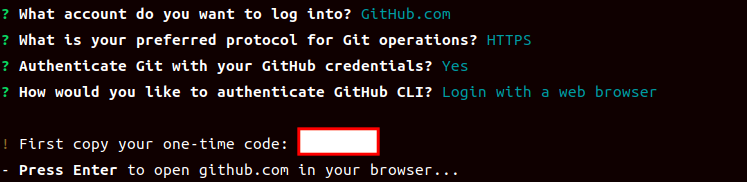
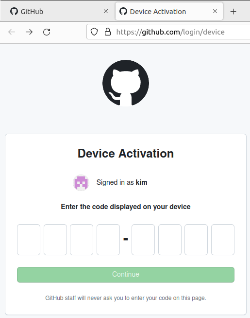
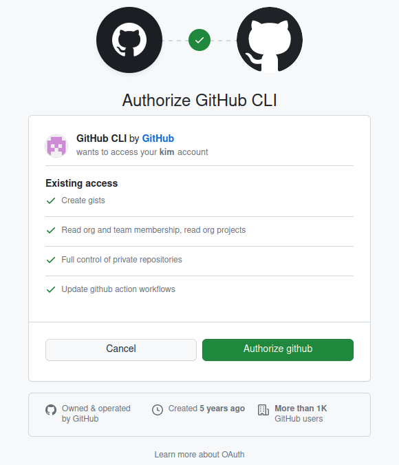
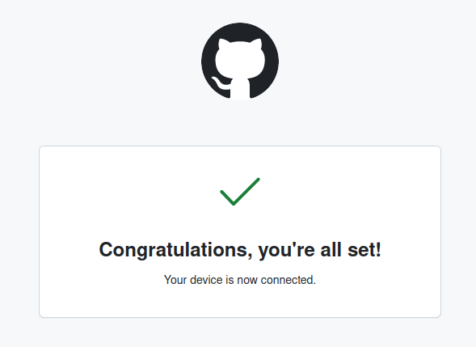
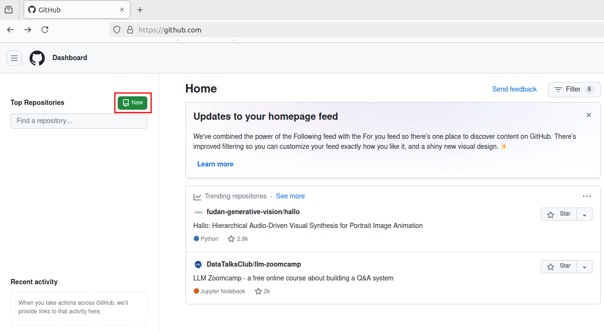
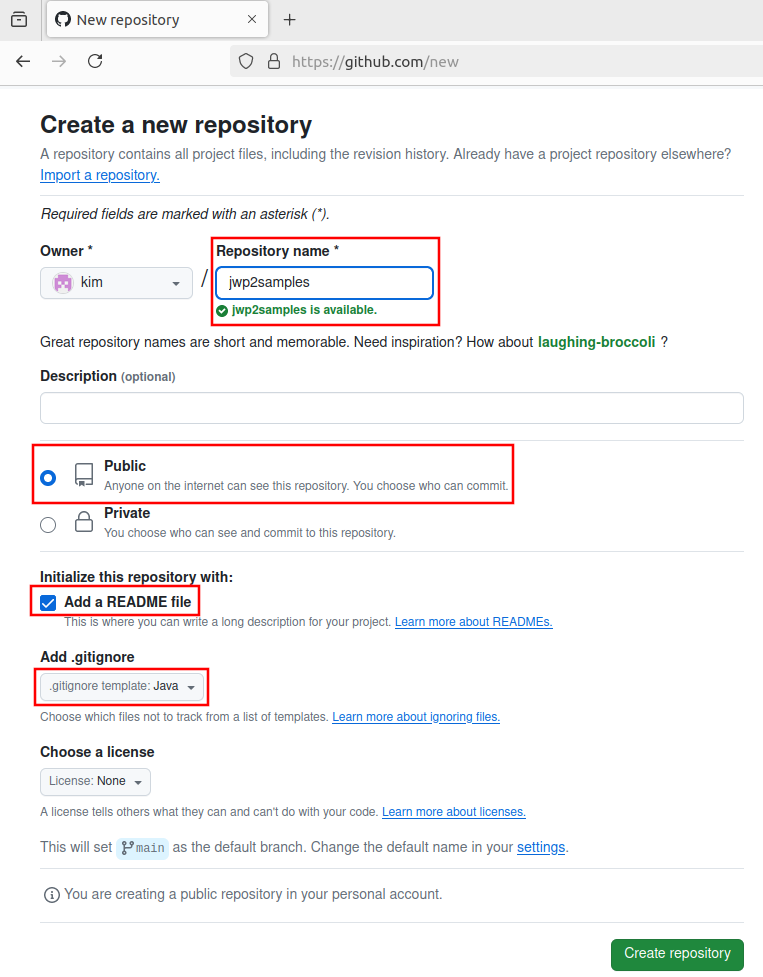

Setting up a Java development environment
Java
https://www.oracle.com/java/technologies/downloads

Run the JDK Installer.
Continue clicking the Next button to complete the installation.
The installed JDK directory is C:\Program Files\Java\jdk-22.
Create a new variable named JAVA_HOME in the user variables as follows:
Open Start
System
Advanced System Settings
Environment Variables(N)...
Under the "User variables for someson" section, click the New button.
Type JAVA_HOME in the "Variable name" setting.
Type C:\Program Files\Java\jdk-22 in the "Variable values" setting.
Click the OK button.
Click the OK button.
Add the JDK's bin path to the Path of user variables.
Run the command prompt as an administrator and execute echo %PATH% to confirm the JDK's bin path is in your Path.
C:\Windows\System32> echo %PATH% C:\Program Files\Common Files\Oracle\Java\javapath; C:\Windows\system32;C:\Windows; C:\Windows\System32\Wbem; C:\Windows\System32\WindowsPowerShell\v1.0\; C:\Windows\System32\OpenSSH\; C:\Program Files\Java\jdk-22\bin;
Maven
https://maven.apache.org/download.cgi
Download the latest binary version to unpack it.
Copy the generated directory to a location of your choice.
Add the Maven's bin path to the Path of user variables.
Verify.
mvn -v
Git
https://git-scm.com/download/win
Download 64-bit Git for Windows Setup.
You can complete the installation simply by clicking the Next button.
Add your name and email to your git config as shown below.
git config --global user.name "Jo Maso" git config --global user.email jo@gmail.org
Verify.
git config --global --list
GitHub CLI
Sign up at https://github.com.
Click Download for Windows on the https://cli.github.com page to download the msi file.
After installation, run gh auth login while logged in the https://github.com.
gh auth login
Select as below.
? What account do you want to log into? GitHub.com ? What is your preferred protocol for Git operations? HTTPS ? Authenticate Git with your GitHub credentials? Yes ? How would you like to authenticate GitHub CLI? Login with a web browser
Once you complete your selection, a one-time password will be added to the output.
! First copy your one-time code: one-time code - Press Enter to open github.com in your browser...

Copy the one-time password displayed in the command prompt and press Enter.
A page will open in your web browser where you can enter your password.
Paste the password displayed in the command prompt into the input box of the page.
Click Continue.

Click Authorize github.


Create a new repository

Type jwp2samples on the Repository name.
Choose Public
Check Add a README file
Select .gitignore:Java

Note
https://www.toptal.com/developers/gitignore
This site provides more specific help in creating your .gitignore file than github provides.
Click on the repository you created on the https://github.com.
Copy the address from the web browser address bar.
Paste the copied address after git clone at the command prompt and press Enter.
git clone https://github.com/<your-account>/jwp2samples
If the repository name is jwp2samples, a folder with the same name will be created.
After going to jwp2samples, open the README.md file and write as follows:
cd jwp2samples vi README.md
Java Web Programming 2 Samples ============================== ## A Bulletin Board Program with * Spring MVC * Spring Security * MyBatis Spring * Bean Validation * i18n * Thymeleaf ## How to run **mvn clean jetty:run**
Save your changes to your GitHub repository.
git add . -A git commit -m "first commit" git push
To make your local repository follow the GitHub repository, run:
git fetch orign git reset --hard orgin/main
Git Guide
https://rogerdudler.github.io/git-guide/index.ko.html
Vim
https://www.vim.org/download.php
Down gvim_9.1.0_x64_signed.exe (64bit installer).
Continue clicking the Next button to complete the installation.
Add "C:\Program Files\Vim\vim91" to the Path of user variables.
To use vi instead of vim, run:
Set-Alias vi vim
Vim has some useful commands.
At the command prompt, press ctrl and r.
bck-i-search: and a cursor appears.
PS C:\Users\javaschool> bck-i-search: _
As you type a character, it shows the command history containing that character.
Enter will execute that command.
You can edit the command after pressing the Esc key.
If you just type git r, it will look in your command history and show you git reset --hard origin/main.
git reset --hard origin/main bck-i-search: git r
If you press enter at this point, git reset --hard orgin/main will be executed.
Vim on Windows allow you to be able to use some useful commands
and to do simple document editing.
However, unlike Linux, Vim on Windows is not suitable for professional document work.
For Windows document editor, I recommend Notepad++.
https://notepad-plus-plus.org/downloads/
I recommend Eclipse as a Java development tool.
https://www.eclipse.org/
Oracle
https://www.oracle.com/database/technologies/xe-prior-release-downloads.html
If you have a 64-bit Windows system -- most systems are 64-bit systems -- download Oracle Database 11gR2 Express Edition for Windows x64.
You need an account on the Oracle website to download this version.
After registering as a member and logging in, the download will start.
After unpacking the downloaded compressed file, run setup.exe in the Disk1 subdirectory created and click the Next button to install it.
You can install Oracle easily since Oracle 11g version officially supports Windows 10 and 11.
Do not forget the administrator password you entered during the installation.
Since Oracle Application Express, one of the 11g XE components, uses port 8080, stop Tomcat if it is in service before installation.
For Windows, the default port of Oracle Application Express, 8080, cannot be changed during installation. After installation, the method to change the 8080 port of Apex to 9090 is as follows:
C:\Users> sqlplus Enter user-name: system Enter password: Connected. SQL> Exec DBMS_XDB.SETHTTPPORT(9090); PL/SQL procedure successfully completed. SQL>
C:\Users> sqlplus Enter user-name: system Enter password: Connected. SQL> @C:\oraclexe\app\oracle\product\11.2.0\server\rdbms\admin\scott.sql SQL>
Tomcat
https://tomcat.apache.org/download-10.cgi
Download 64-bit Windows zip of the 10.1.xx version.
Unpack the downloaded file, copy the created directory to the location you want.
Tomcat start: run startup.bat of the bin folder.
C:\tomcat10\bin> .\startup.bat
Tomcat stop: run shutdown.bat of the bin folder.
C:\tomcat10\bin> .\shutdown.bat